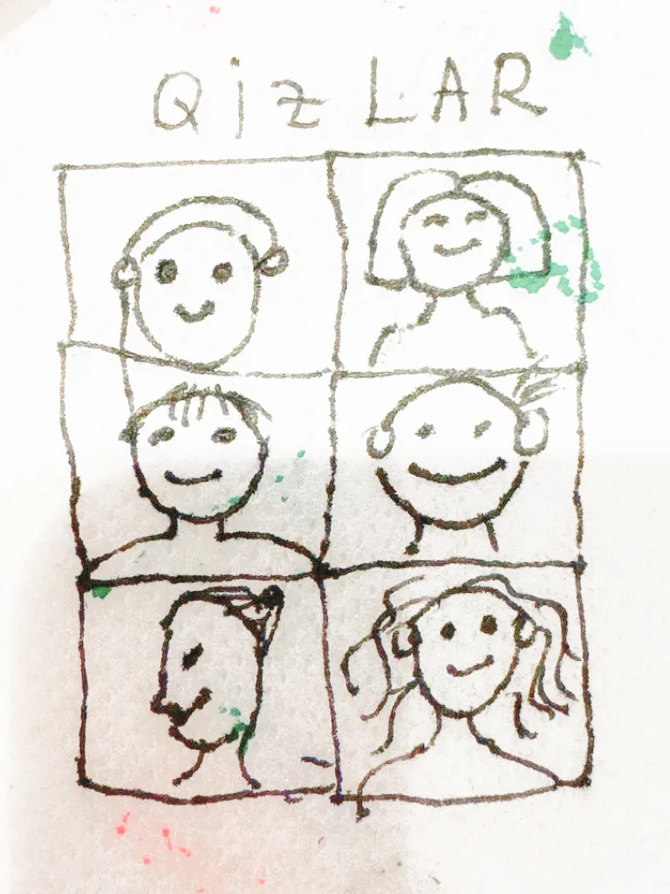
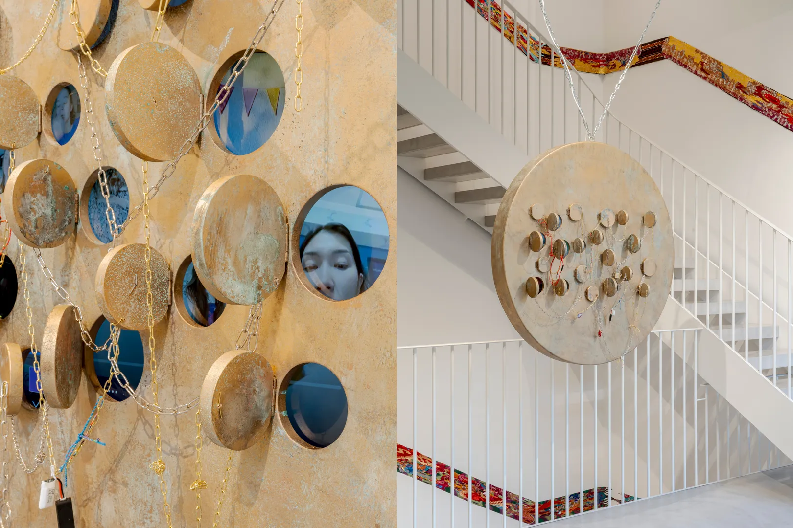
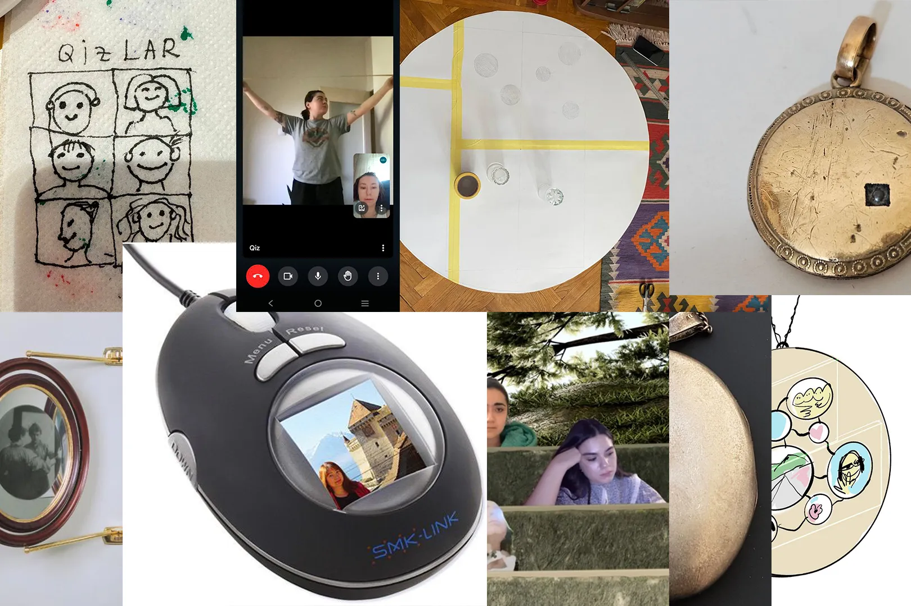
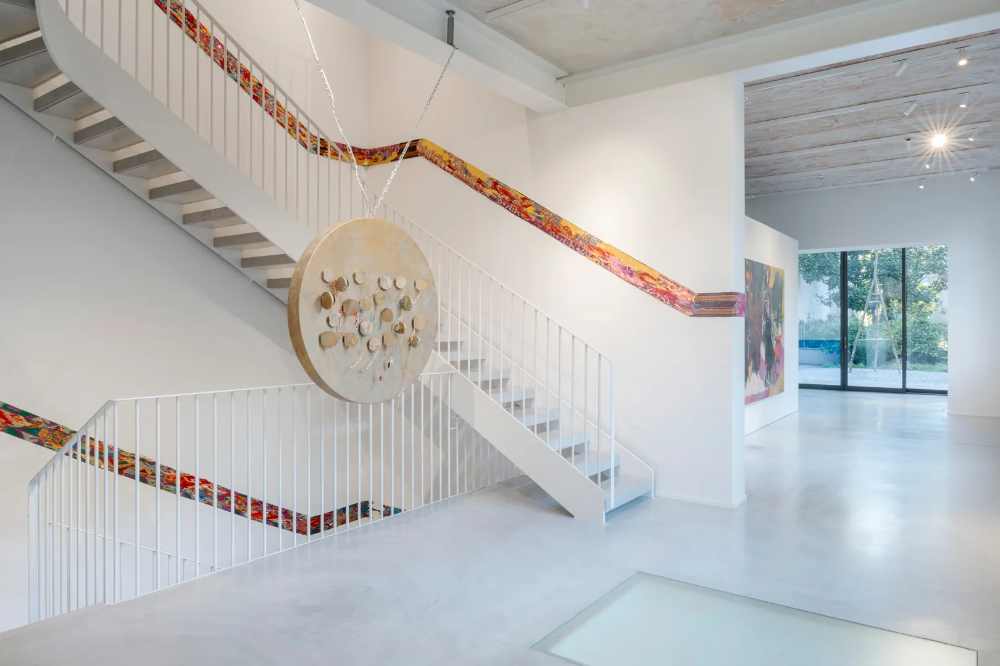
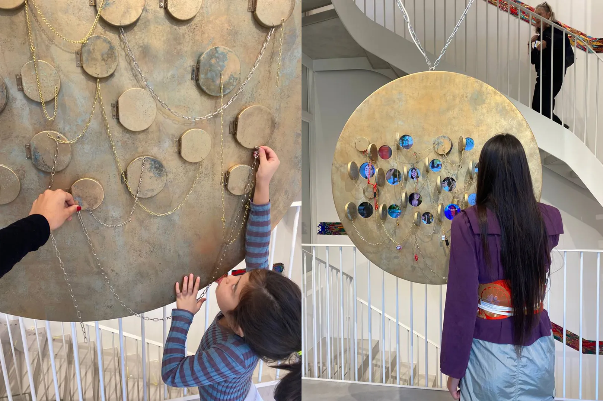

Menu
Menu
In the circle of my heart
Installation
2024
Together, as a collective, Qizlar developed a concept that explores the role of digital spaces in their lives and their ability to bring them together, even when they are far apart. It is a visual metaphor of their shared “here.” They were inspired by the image of a locket — a symbol of closeness, love, and kinship. A locket, worn close to the heart, holding a photograph or a relic, feels like the ancestor of the beloved Telegram video-messages they share. These small, fleeting moments of laughter, whispers, doubts, and joys capture the essence of intimacy — so fragile and so significant.
The centerpiece of the installation is a massive circular locket. Its surface is adorned with golden medallions — little secret holders resembling protective amulets. Each medallion contains a fragment of their digital lives: small moments captured in Telegram video-messages. You can open each one and peek inside to connect with their stories and get to know them a little better. Between the medallions stretch delicate chains — like webs that echo their connections. They intertwine, imitating the intricacies of relationships: fragile, yet surprisingly strong. In some places, the chains are complemented by wires, flash drives, and other elements that remind us of the digital realm where they not only communicate but also live, work, and dream.
Team:
Concept: Aziza Kadyri, Sofia Seitkhalil, Anastasia Sever, Alina Olimova, Yuliya Saatova, Diyora Tuhtamuratova, Maftuna Burkhanova, Mutabar Khushvaktova, Amina Akhrorkulova, Tanya Kim, Gu’lnara Khudaybergenova, Rosina Angalisheva
Commissioned by Fondazione Elpis for ‘You Are Here’ exhibition in Milan, IT, 2024




